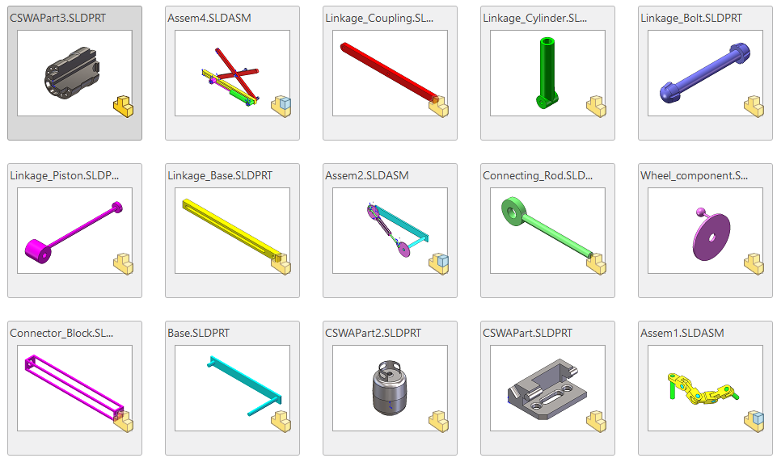

Representative parametric assembly developed during CSWA preparation
To reestablish proficiency after a period without access to my university SOLIDWORKS license, I completed structured, self-directed design practice focused on parametric modeling and robust design intent. Emphasis was placed on fully constrained sketches, clean feature trees, and assemblies that rebuild predictably under dimensional changes.

Representative assembly from CSWA examination — components and constraints demonstrating design intent, feature organization, and parametric control.The CSWA (Certified SOLIDWORKS Associate) exam tests part modeling, assembly creation, and drawing interpretation under timed conditions. The exam emphasizes correct mass and geometric properties as grading criteria — requiring precise modeling rather than approximate results.
Preparation included timed practice sets replicating the exam format, focusing particularly on efficient sketch strategies and feature selection to complete complex parts within time constraints.
The Certified SOLIDWORKS Professional exam builds on CSWA with more advanced part and assembly scenarios including configurations, design tables, and more complex assembly relationships. Current preparation targets the Part Modeling segment first.